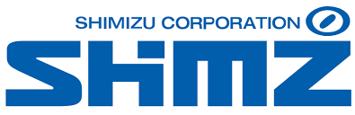

Shimizu Corporation
清水建設株式会社 | Construction, Architecture, Civil Engineering | Tokyo, Japan

At a Glance
| Founded | 1804, Edo (present-day Tokyo), Japan |
|---|---|
| Headquarters | 2-16-1 Kyobashi, Chuo-ku, Tokyo, Japan |
| Stock Exchange | Tokyo Stock Exchange (TYO: 1803); Nikkei 225 |
| Employees | Approximately 21,286 (consolidated) |
| Annual Revenue | Approximately USD $13–15 billion |
| Corporate Slogan | "Today's Work, Tomorrow's Heritage" |
| Website | www.shimz.co.jp/en |
| Current President | Tatsuya Shimmura |
Company Overview
Shimizu Corporation is one of Japan's oldest and most prominent construction companies, with continuous history spanning over 220 years. Founded in 1804 as a carpentry shop in Edo by Kisuke Shimizu I, the company has evolved from an artisanal craft business into a globally recognized general contractor and engineering services provider. As a Nikkei 225-listed company on the Tokyo Stock Exchange, Shimizu maintains significant market capitalization and is consistently ranked among the top global construction companies by revenue and project scale.
The company's foundational philosophy, influenced by Eiichi Shibusawa's concept of uniting ethical purpose with commercial enterprise (articulated in "The Analects and the Abacus"), remains central to its organizational identity. Shimizu is known for iconic projects spanning Japan's modernization: from the Meiji Palace reconstruction to the 1964 Tokyo Olympics' Yoyogi National Gymnasium, from the undersea Tokyo Bay Aqua-Line to contemporary mixed-use developments and major infrastructure across Asia.
History: From Edo Carpentry to Global Construction
Origins: Edo Period Craftsmanship (1804–1867)
Shimizu Corporation traces its origins to 1804, when founder Kisuke Shimizu I established a carpentry shop in Edo, now Tokyo. An early milestone came in 1868, when Shimizu built the Tsukiji Hotel, Japan's first Western-style hotel designed to host foreign visitors following the country's opening to the West.
Meiji Era Expansion and Modernization (1868–1912)
The Meiji era marked a pivotal transformation. The firm moved from artisanal carpentry into organized general contracting, integrating Western engineering methods. Notable projects of the period included reconstruction of the Meiji Palace (1888) after the original burned down.
Early 20th Century: Incorporation and Growth (1900s–1945)
In 1915, the firm was incorporated as Shimizu Gumi, Ltd. The company continued to expand its project scope, including construction of the first Dai-ichi Life building in 1921. During World War II, Shimizu redirected activity toward wartime infrastructure.
Postwar Reconstruction and High Growth (1945–1980s)
The postwar decades were defined by Japan's rapid economic reconstruction, during which Shimizu played a central role in rebuilding the country's built environment. Landmark projects of this era include the Yoyogi National Gymnasium for the 1964 Tokyo Olympics and the Tokyo Bay Aqua-Line. The company also undertook early international expansion, establishing offices in Dalian, China (1915) and Los Angeles (1974).
Global Expansion and Diversification (1990s–Present)
Shimizu continued growing its international footprint through Asia, the Middle East, and North America. Notable overseas projects include Singapore Changi Airport Terminal 3, the Malaysia-Singapore Second Link, Jakarta MRT, Ho Chi Minh City Metro, and Manila Metro projects. In Japan, major projects include the Mode Gakuen Cocoon Tower (2008) and Tokyu Kabukicho Tower (2023).
Business Segments
- Building Construction: Offices, hospitals, schools, factories, commercial and residential developments.
- Civil Engineering: Infrastructure including roads, bridges, tunnels, airports, railroads, dams.
- Overseas Construction: International general contracting across Asia, North America, Middle East, Africa.
- Real Estate Development: Property investment and development in Japan, Southeast Asia, and the United States.
- Engineering: Cleanrooms, semiconductor facilities, pharmaceutical plants, data centers.
- Green Energy Development: Solar, wind, biomass, geothermal, hydraulic power generation and sustainability consulting.
Corporate Strategy & Vision
In May 2019, Shimizu formulated SHIMZ VISION 2030, the long-term strategic vision. The vision articulates a goal of becoming a 'Smart Innovation Company' by integrating three core dimensions of innovation: technology, talent, and business structure. SHIMZ VISION 2030 focuses on three societal contributions: a Resilient Society, an Inclusive Society, and a Sustainable Society.
The current Mid-Term Business Plan (2024-2026) operates under the theme 'Stronger Business Foundation for Sustained Growth.' A stated financial target is consolidated ordinary income of ¥200 billion or higher by fiscal 2030, with target business mix of 65% construction and 35% non-construction revenue.
Shimizu has articulated an environmental vision called SHIMZ Beyond Zero 2050, targeting net-zero CO2 emissions from its operations by fiscal 2050. The company was the first in Japan to complete a fully off-grid Zero Energy Building (ZEB) system, the Seicho-no-Ie Office in the Forest (2013).
Selected Notable Projects
Japan
- Tsukiji Hotel, Tokyo (1868): Japan's first Western-style hotel
- Meiji Palace Reconstruction (1888)
- Yoyogi National Gymnasium (1964): Olympic venue
- Tokyo Bay Aqua-Line: Undersea road tunnel
- Mode Gakuen Cocoon Tower, Shinjuku (2008)
- Tokyu Kabukicho Tower (2023)
Overseas
- Singapore Changi Airport Terminal 3
- Malaysia-Singapore Second Link
- Jakarta MRT North-South Line, Indonesia
- Ho Chi Minh City Metro Line 1, Vietnam
- Metro Manila Subway, Philippines
Recent Developments (2024–2026)
- Nippon Road Acquisition (2025): Consolidated as subsidiary to expand civil engineering.
- Aomi Construction (January 2026): Consolidated as subsidiary.
- Cross Management Corp. Acquisition (2025): U.S.-based acquisition strengthening North American renovation capabilities.
- AI-Native Wireless Networks R&D (July 2025): Joint R&D consortium for construction site communications.
- 3D Printing System (December 2025): Development of spray-based 3D printing for large curved components.
Context for MBA Discussion
- Family heritage meets public company governance: Balancing long-term craft tradition with publicly traded, globally competitive demands.
- Diversification beyond construction: 35% non-construction revenue target by 2030 represents significant strategic shift.
- Labor and productivity pressures: Japan's construction sector faces skilled labor shortages; Shimizu invests in robotics, BIM, modular construction.
- Seismic resilience as core competency: Seismic isolation and vibration control are genuine differentiating technologies.
- Global expansion question: With 75% domestic revenue currently, the pace and geography of international growth to reach 25% is central strategic question.